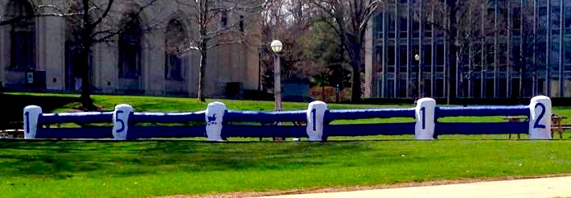

我每封邮件都以“Carpe Diem”结尾，字面翻译来看是，“把握每一天”。
但是谁知其中深意吗？
它意味着每一天积极的过你的人生，不要消极。
决定你想要成为什么样的人，每一天都至少努力的朝你的目标迈进一小步。
向那个理想中的你自己靠近，不管这个理想中的人是什么样子。
它意味着寻找你所在乎的事，为了这件事做点什么。
它意味着努力把这个世界变得更美好。
无论你如何定义这个更好，至少每天都在朝那个方向努力。
它不意味着你要完美，你从不经受任何艰难困苦。
你可以不完美，你也可以过的不开心。
但是每一天，都尽自己最大的努力。
不放弃，做做好的自己，然后安心的接受它所带来的一切。
这个世界有太多太多的问题，人类有太多太多的需要。
我发自内心的觉得你们会参与到解决这些问题当中去。
你们会满足很多人类的需要，世界真的会因为你而变得更加美好。
也许在这个过程中，你们可能会用到我们所学的编程技巧。
愿你们每天都如繁星闪烁，愿你们乐在其中。 ---Prof. Kosbie
Carpe Diem